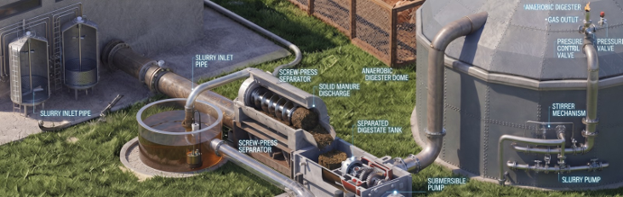

Waste Valorization and Anaerobic Digestion Subsystem

Subsistem ini mengolah limbah peternakan (slurry) menjadi produk yang bernilai, yaitu biogas sebagai sumber energi dan digestate sebagai pupuk. Proses utamanya terjadi di dalam anaerobic digester, yaitu tangki tertutup tempat mikroorganisme menguraikan bahan organik tanpa oksigen.
Komponen utama yang terlihat pada gambar:
- Slurry inlet pipe: pipa masuk untuk slurry dari kandang.
- Screw press separator: memisahkan padatan dan cairan.
- Solid manure discharge: jalur keluarnya padatan kotoran.
- Separated digestate tank: tangki penampung hasil pemisahan.
- Submersible pump: memompa cairan ke proses berikutnya.
- Anaerobic digester dome: kubah tempat biogas terbentuk.
- Stirrer mechanism: pengaduk agar campuran tetap homogen.
- Pressure control valve: mengatur tekanan gas.
- Gas outlet: jalur keluarnya biogas.